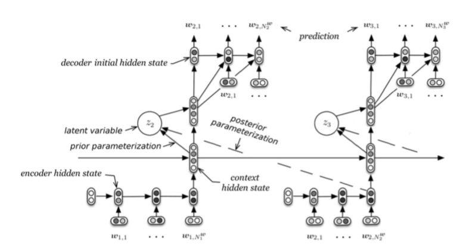
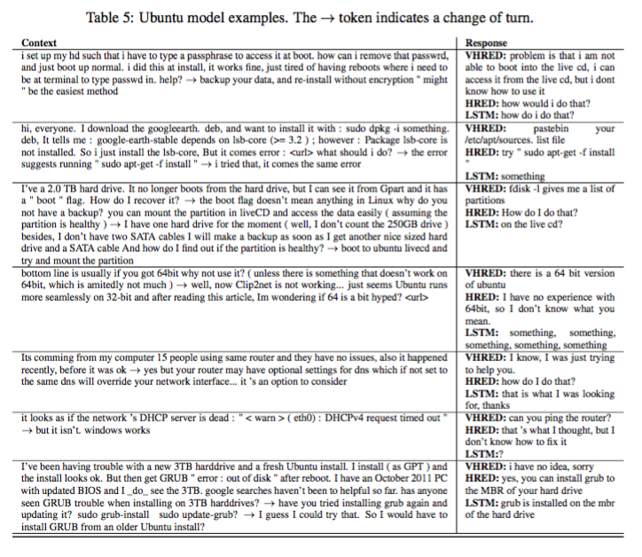

A Hierarchical Latent Variable Encoder-Decoder Model for Generating Dialogues #PaperWeekly#
本文分享的paper旨在解决语言模型生成部分存在的问题，并且以bot为应用背景进行了实验。paper的题目是A Hierarchical Latent Variable Encoder-Decoder Model for Generating Dialogues，作者来自蒙特利尔大学和Maluuba公司，这家公司的研究水平非常地高，arxiv上常常可以刷出高质量的paper。
通常来讲，自然语言对话都会包含两个层次的结构，一个是utterance，由语言的局部统计信息来表征其含义，一个是topic，由一些随机的特征来表征。本文的工作就是对这些utterance中存在的随机特征进行建模，从而提高语言模型生成人类语言时的质量。本文认为，类似于RNNLM这样的语言模型在生成人话质量不高的根本原因在于，没有处理好隐藏在utterance中的随机feature或者说noise，从而在生成next token（short term goal）和future tokens（long term goal）效果一般。
本文的模型Latent Variable Hierarchical Recurrent Encoder Decoder(VHRED)，在生成过程中分为两步：
step 1 随机采样latent variables
step 2 生成输出序列
架构示意图见下图：

在生成每一个utterance时，需要用到四个部分，encoder RNN、context RNN、latent variable、decoder RNN，按顺序依次输入和输出。这里的latent variable和IR中的LSI有一点异曲同工，latent表明我们说不清他们到底具体是什么，但可能是代表一种topic或者sentiment，是一种降维的表示。
实验部分，选择了bot作为应用背景，得到了不错的效果。见下图：

本文解决的不仅仅是bot领域对话生成的问题，而是整个seq2seq框架中decoder的问题，只要涉及到decoder生成的部分都可以采用本文的思想来解决问题。latent topic是一个非常有意思的东西，在LSI、推荐系统中都有非常重要的意义，矩阵分解之后得到两个降维之后的矩阵，从一组两个维度映射到了两组两个维度，也就是多了所谓的latent topic，说不清这些topic是什么，但的确可以将相似的东西聚到了一起。本文也是用latent topic来描述隐藏在utterance中那些说不清道不明的随机noise，得到了更好的效果。